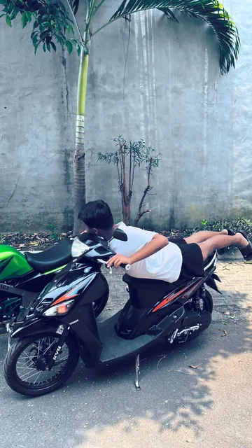

Halo, saya Bintang!
Siswa kelas X SMK, calon Junior Web Developer di Kelas Industri UBIG.
Lihat Proyek SayaTentang Saya
Saya tinggal di Pasuruan dan senang mencoba hal baru di dunia teknologi. Saya ingin bisa membuat website yang bermanfaat untuk sekolah dan UMKM di sekitar rumah.
Hobi
- Bermain Game
- Bersepeda
- Mendesain Proyek
- Berenang
Cita-cita
Menjadi Full Stack Web Developer. Langkah yang saya rencanakan:
- Menuntaskan Kelas Industri UBIG sampai Semester 4
- Magang di perusahaan teknologi
- Bekerja sebagai Web Developer
Keahlian
- HTML (Menengah)
- CSS (Menengah)
- Git dan GitHub (Dasar)
- Desain poster dengan Canva (Mahir)
- JavaScript (Dasar)
Ada 5 keahlian yang sedang saya kembangkan.
Jadwal Belajar
| Hari | Waktu | Kegiatan |
|---|---|---|
| Senin | 19.00 - 20.00 | Membaca ulang modul |
| Rabu | 19.00 - 21.00 | Mengerjakan tugas praktik |
| Jumat | 19.30 - 20.30 | Merekam video dan menulis laporan |